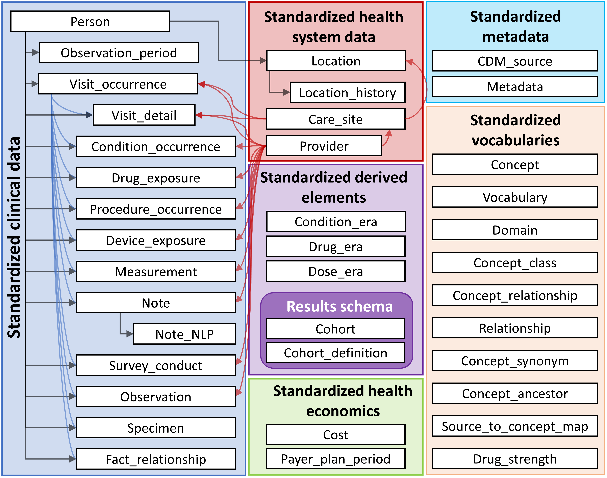

The content on this website is under active development. Please proceed with caution.
Common Data Models
- Understand the purpose of a CDM for research.
- Describe the differences between CDMs and FHIR.
- Describe how FHIR can be used alongside CDMs.
- Identify some notable research CDMs used in the US.
A Common Data Model (CDM) is a set of standardized data schemas that are used across organizations. CDMs can facilitate research by making it possible to write a single data query that will run across organizations using the same CDM. Without a CDM, a researcher would need to create a different query for each organization.
Organizations that use CDMs can form a health data network to facilitate data access by network members. For more information on how health data networks are structured, see Weeks and Pardee (n.d.).
1 CDMs and FHIR
CDMs and FHIR are both important parts of the health research data ecosystem, but differ in key ways:
Purpose and scope
CDMs: Provide a consistent structure for storing and querying health data to faciliate research.
FHIR: Enable interoperability between health IT systems (which can included research-related systems).
Structure
CDMs: Typically, CDMs consist of a standardized set of relational database tables, with columns for each data element. CDMs also typically define standardized terminology for representing concepts.
FHIR: FHIR defines resources for each type of data, which can be extended to add additional data elements as needed for a given use case. Resources have a nested structure (like a multi-level outline) rather than a tabular structure (like a spreadsheet). The base FHIR specification does have strict terminology constraints, though these can be added for a specific use case in an Implementation Guide.
Implementation
CDMs: Typically implemented as a database within a research data warehouse. When CDMs are used as part of a research data network, additional mechanisms may be implemented for sharing data across the network (Weeks and Pardee, n.d.).
FHIR: Typically implemented as an API within a health IT system like an EHR, though research-specific databases may also implement FHIR (e.g., Kids First).
Because of these differences, FHIR does not obviate existing CDMs and health data networks. However, FHIR can be used in conjunction with CDMs. For example:
Populating a CDM: FHIR can be used as part of the process for populating a CDM. Typically, data are extracted from EHRs and other clinical or billing systems, transformed into the CDM’s format, and then loaded into the CDM database. (Note that this type of process is generally referred to as ETL for Extract, Transform, Load.) FHIR can be used as the input into an ETL process, which may allow for ETL logic that is more portable across institutions and EHR installations.
Mapping between CDMs: The Common Data Models Harmonization IG uses FHIR to map and translate between PCORNet, i2b2, OMOP, and Sentinel (all described below).
Portable phenotypes: FHIR and Clinical Quality Language (CQL) were used by Brandt et al. (2022) to create phenotypes for cohort definitions. These were translated to run against the OMOP CDM. Theoretically, institutions that do not have OMOP research databases could use FHIR and CQL directly to identify cases and non-cases.
2 Notable CDMs
If you are not familiar with CMS, below are some notable CDMs used in the US:
2.1 OMOP
OMOP was originally created in 2007 by the FDA and other partners to study the effects of medical products.(Weeks and Pardee, n.d.) It is now managed by the OHDSI (Observational Health Data Science and Informatics).
open community data standard, designed to standardize the structure and content of observational data and to enable efficient analyses that can produce reliable evidence.

OMOP uses OHDSI standardized vocabularies. The OHDSI standardized vocabularies establish a single standard concept for each clinical entity. When data is converted into OMOP, the source concept is mapped to the corresponding standard concept. This allows researchers to interpret and use clinical entities from different organizations.(OHDSI, n.d.)
2.2 Sentinel
Sentinel is a CDM designed to monitor whether FDA-regulated medical products cause unexpected adverse reactions.
Although FDA-regulated products undergo clinical testing before approval, the testing may miss adverse reactions. This is because the test population may not fully represnt the population that uses the product. To detect and assess adverse events after approval, the FDA created Sentinel in 2007. See here for more information about the Sentinel data network.
2.3 PCORnet
The Patient-Centered Outcomes Research Institute (PCORI) developed PCORnet to make clinical research more streamlined, representative, and efficient. PCORnet data is largely drawn from EHRs, as well as some patient-reported and payor data. The PCORnet includes data from 66 million patients that researchers can use for observational studies. PCORnet launched in 2014 (Fleurence et al. 2014).
2.4 i2b2
Developed in 2004 by Partners HealthCare and Harvard Medical School, i2b2 is an open-source research data application framework that “provides clinical and translational investigators with the tools necessary to integrate medical record and clinical research in the genomics age.” (n.d.a)
i2b2 is structured differently from the other CDMs discussed here: rather than having separate data tables for each type of data (e.g., procedures and diagnoses are stored in different database tables, each with a different set of columns), i2b2 uses the same set of tables for all data types. i2b2 refers to this as the “star schema” (see diagram below). i2b2 describes this as follows:
Instead of separate tables for diagnoses, medications, and other data types, all patient observations are stored in a single “fact” table. A separate ontology describes the different codes that are placed in this fact table. As a result, institutions can use their own local codes, without having to map to common code sets. Furthermore, institutions can easily add new types of data to i2b2 and tranSMART just by extending the ontology. No changes to the database or software are needed. This enables software developers to build query, analysis, and visualization tools that are generalizable to different types of data and future-proof since the i2b2 CDM can remain stable over time.